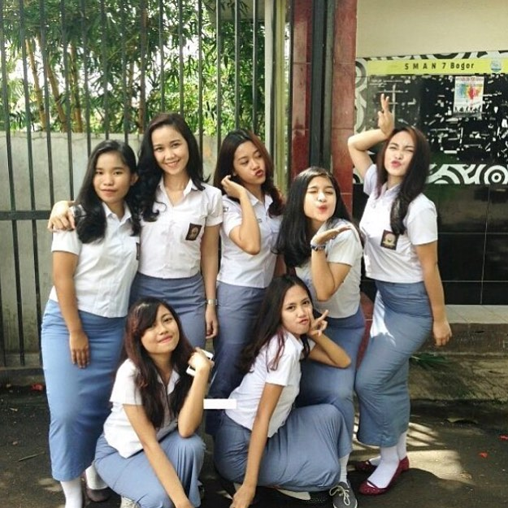

Ada yang bilang masa SMA itu engga enak, Terkadang gua pun bingung dengan orang yang sering bilang masa SMA itu tidak enak padahal gua merasa masa masa SMA itu paling indah dan menyenangkan diSMA itu kita bisa mendapatkan banyak teman - teman dan beda - beda sifatnya ada yang suka bikin ketawa yang jahil sama temen temen ada juga yang selalu membuat onar disekolah.
Jujur masa SMA itu sangat susah untuk dilupakan karena banyak kenangan yang masih kita simpan saat ini mulai disekolah ditonkrongan maupun dijalur ya walaupun suka tawuran tapi hati gua deg degan tapi ga tau kenapa gua sering ngelakuinnya tapi sayangnya gua udah lulus jadi gua udah ga bisa nikmatin masa masa SMA gua lagi.
